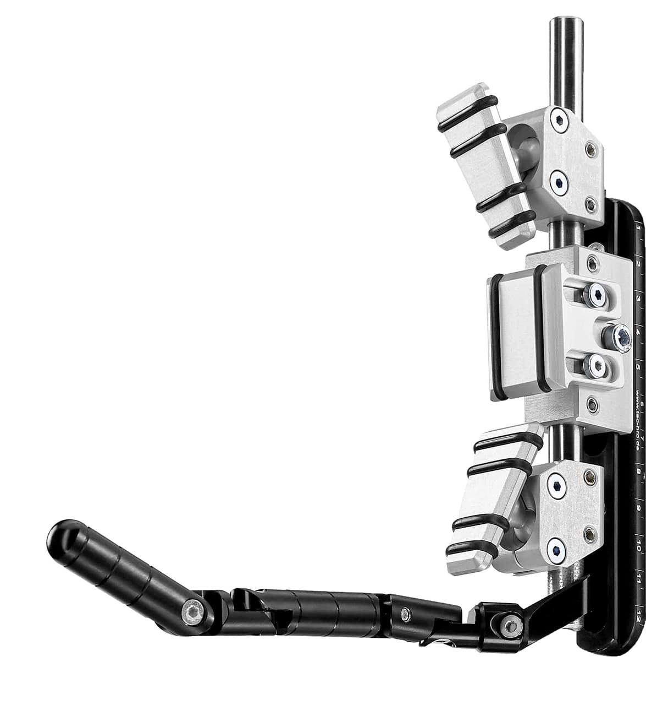
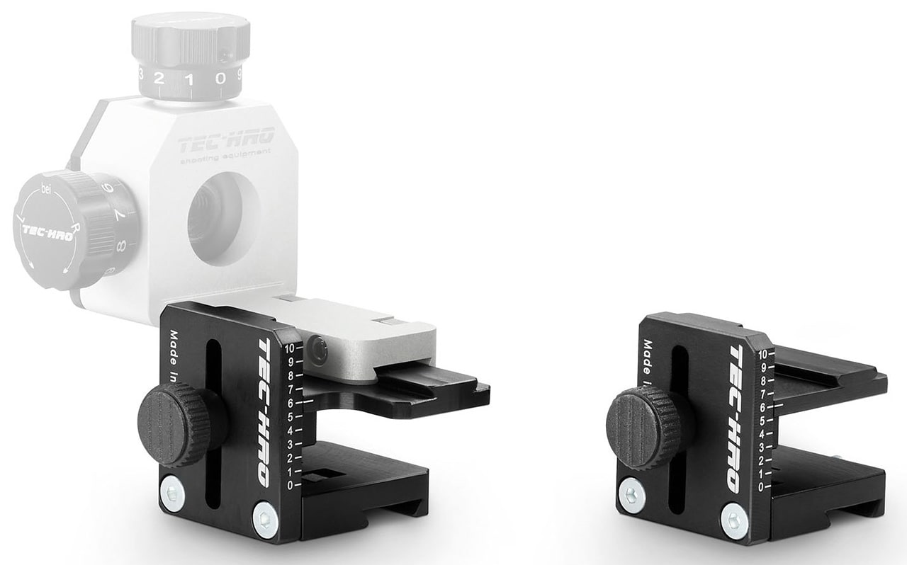
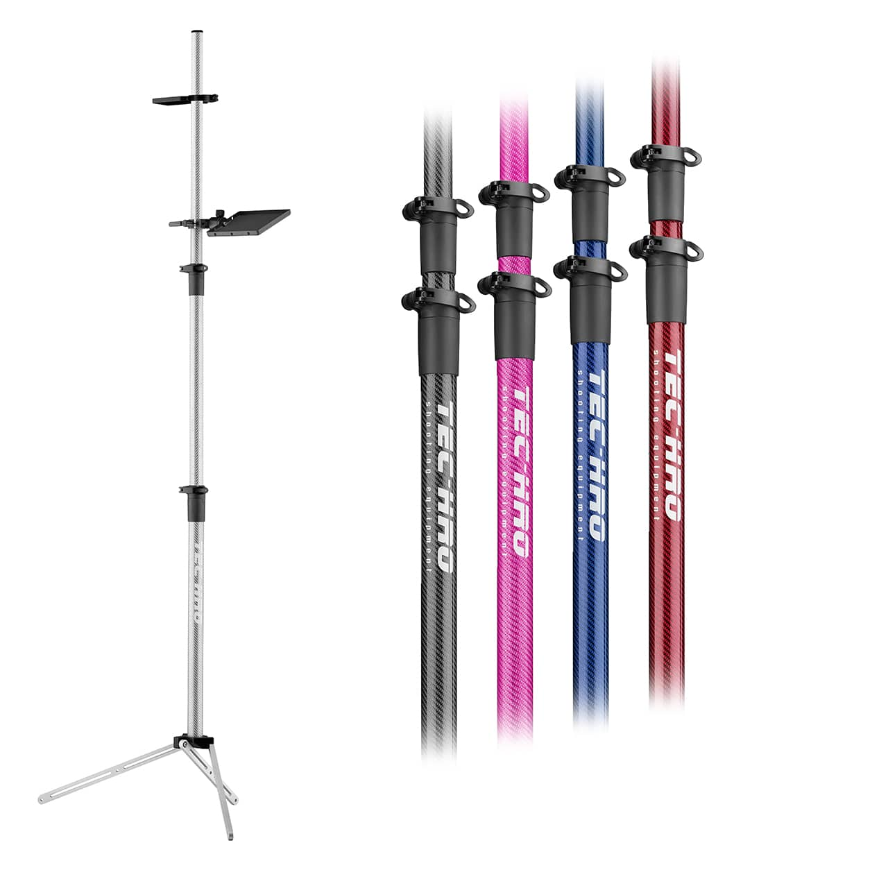

Die Schaftkappe bildet die Verbindung zwischen dem Sportgerät und deiner Schulter/ Oberarmpartie. Hierzu wird die Schaftkappe durch individuelle Verstellmöglichkeiten an die Einsetzposition angepasst. Die Schaftkappe kann je nach Hersteller und Bauweise individuell angepasst werden. Die maximale Verstellmöglichkeit der Höhe ist durch die Bauweise vorgegeben. Das Verstellen nach rechts und links, parallel der Normstellung, sowie das Drehen in der vertikalen Achse darf maximal 15 mm betragen. Die Einstellung sollte so gewählt sein, dass die Schaftkappe über die gesamte Fläche deiner Schulter anliegt, um immer einen festen Körperkontakt zu gewährleisten. Durch den passiven Druck deiner Abzugshand am Griff entsteht zwischen der Schaftkappe und des Einsetzpunktes die wichtigste Verbindung zwischen der Sportwaffe und deinem Körper.
Als besonders flexibel in den ergonomischen und anatomischen Anpassungs-Einstellungen, gilt die Schaftkappe „TEC-HRO fusion“ von TEC-HRO. In wenigen Handgriffen kannst du diese leicht an deine Einsetzposition anpassen und so eine optimale Passung einstellen. Die schmale und besonders kurze Bauweise der Kontaktflächen sind ein Vorteil für deine Anschlagsgefühl. Diese Schaftkappe von TEC-HRO eignet sich für Schäfte vieler verschiedener Hersteller.
Die Schaftbacke dient der Auflage deines Kopfes bei zentrischem Blick durch die Visierung. Die Schaftbacke sollte dabei so eingestellt sein, dass eine ergonomische Haltung deines Kopfes sowie deiner Halswirbelsäule entsteht. Zur optimalen Positionierung deines Kopfes kann die Schaftbacke je nach Hersteller horizontal, vertikal und in ihrer Neigung individuell verstellt werden.
Die Griffgröße kann je nach Hersteller variabel gewählt werden. Die Größe muss individuell an deine Abzugshand angepasst werden, um den Griff gut fassen zu können. Zwischen dem Griff und deiner Brust darf jedoch kein Kontakt bestehen. Die Einstellung muss daher mit etwas Abstand gewählt werden. Als Orientierung der Griffstellung ist die Position deines vordersten Fingerglieds zur Abzugszunge hilfreich. Hierbei sollte zwischen deinem ersten und dritten Fingerglied möglichst ein Winkel von 90° entstehen. (Für Abzüge mit Vorzugsweg, 90°bei überwundenem Vorzug). Bei der Griffeinstellung ist zudem darauf zu achten, dass dein Handgelenk nicht angewinkelt ist.
Die Handauflage kann je nach Hersteller horizontal, vertikal und in ihrer Neigung verstellt werden. Die Breite der Handauflage ist ebenso hersteller- und bauartbedingt. Für die Auswahl der richtigen Handauflage ist es wichtig, die Anforderungen des Einsatzes abzuwiegen. Beispielsweiße sind einige zum Einsetzen eines Handstopps für den Dreistellungswettkampf geeignet, andere erweitern eher die Auflagefläche fürs Aufgelegtschießen.
Die Abzugszunge kann je nach Hersteller in Größe und Form abweichen. Die Auswahl der optimalen Form liegt bei dir. Wichtig ist, dass die optimale Positionierung deines ersten Fingergliedes immer gleich ist. Hilfsmittel sind hierbei kleine Spitzen oder Gummi-Noppen am Abzug, um stets eine gute Wiederholgenauigkeit zu erreichen. Die Einstellungen des Vorzugs- und Abzugsgewichts, sowie des Vorzugswegs, werden durch Stellschrauben angepasst. In den Betriebsanleitungen der jeweiligen Hersteller sind dazu genauere Hinweise zu finden.
Die sogenannte Visierlinie wird definiert durch die Gerade zwischen deinem Auge, dem Diopter, dem Korn und dem Zielbild. Bei optimaler Auflage deines Kopfes und zentrischem Blick durch den Diopter, sollte der Abstand zwischen deinem zielenden Auge und dem Diopter zwischen 5 und 8 cm betragen. Wird der Abstand zu gering eingestellt, können Zielfehler auftreten. Ein zu groß gewählter Abstand hat einen zu geringen Lichteinfall zu Folge. Durch das Verschieben des Diopters kann der Abstand individuell angepasst werden.
Das Diopter dient der genauen Justierung der Trefferpunktlage. Je nach Ausführung des Herstellers verändert sich die Trefferpunktlage nach drehen des jeweiligen Einstellrads in der horizontalen oder vertikalen Ebene. Du muss dabei selbst herausfinden wieviel Klicks du pro Ring drehen musst. Bei den meisten Dioptern gilt die Regel 3 Klicks für jeden zu justierendem Ring. Diese Einstellung gilt nicht für Diopter mit sehr feiner Einstellrate.
Die Irisblende ist der einschraubbare Aufsatz am Diopter mit der Öffnung der Visierung in Richtung Zielbild. Mit einem kleinen Öffnungskreis wird dein Blick verschärft. Je nach Hersteller und Ausführung kann der Öffnungskreis geweitet oder verengt werden. Hierbei gilt, „Je kleiner das Loch, desto schärfer, aber auch lichtschwächer erscheint das Zielbild“. Um optimal auf die Wetterbedingungen auf offenen Schießständen reagieren zu können, sind je nach Ausführung der Hersteller, auch verschiedene Farbeinstellungen möglich.
Die Visierlinienerhöhung ist ein Hilfsmittel, um deinen Kopf in eine ergonomische Position zu bringen und dabei trotzdem zentrisch durch das Diopter schauen zu können. Dazu werden gleich hohe Teile unter Diopter und Korntunnel geschoben und somit die Visierlinie leicht angehoben. Je nach Hersteller können diese in der Höhe und auch in der Horizontalen eingestellt werden. Es sollte darauf geachtet werden, dass der Abstand zwischen der Ringmitte zur Laufmitte nicht mehr als 6 cm beträgt.
Damit du deine Visierlinie binnen Sekunden einfach und individuell verstellen kannst, empfiehlt sich die Visierlinienerhöhung „TEC-HRO rapid“ von TEC-HRO. Nach der Montage benötigst du dafür kein Werkzeug mehr. Die Vorteile der neuen Konstruktion sparen dir in den Umbauphasen im Dreistellungswettkampf kostbare Zeit und bietet dir die Möglichkeit für mehr Probeschüsse. Die Rasterung mit Skala zeigt dir die eingestellte Höhe und dient zur Reproduzierung der Position für die jeweilige Disziplin.
Der Korntunnel dient in der Visierung als Orientierung in der zentrischen Anordnung des Systems. Der Korntunnel ist der Halter für das Ringkorn, die Position kann auf dem Gewehr verstellt werden. Mit einer maximalen Länge von 50 mm und einem maximalen Durchmesser von 25 mm darf der Korntunnel nicht über die Laufmündung herausragen. Eine Abwandlung vom geschlossenen Korntunnel ist der offene Korntunnel, hierbei wird das Glasringkorn und ein Orientierungsringkorn, mit größerem Ring, in die Halterung gespannt. Dies Art von Kornhalter ermöglicht ein sehr schönes und kontrastreiches Zielbild.
Das Ringkorn kann in seiner Ausführung je Hersteller und Bauart sehr stark abweichen (freier Ring, Fadenkreuz, horizontaler Balken, vertikaler Balken, Farbigkeit). Am einfachsten sind hier sicherlich die austauschbaren Ringe, die in den Korntunnel gesteckt oder verschraubt werden. Eine benutzerfreundlichere Variante ist das verstellbare Ringkorn, das in den Korntunnel geschraubt wird und jeder Zeit variabel zu verstellen ist.
Die meisten Sportgeräte liegen im Originalzustand unter dem zulässigen Höchstgewicht. Mit Hilfe von Zusatzgewichten kannst du das optimale Gewicht für dich erreich. Die Zusatzgewichte können je nach Ausführung am Lauf oder Schaft befestigt werden, achte darauf, dass sich der Schwerpunkt des Sportgerätes immer mit verändert. Wenn du das Gewehr auf deine Auflageposition der Handauflage auflegst, sollte es im Gleichgewicht oder leicht kopflastig sein.
Eine Schießbrille dient beim Sportschießen, wie im alltäglichen Leben als Sehhilfe. Beim Sportschießen können besonders beim Zielen Schwierigkeiten auftreten. Ein Anzeichen zum Bedarf einer Schießbrille kann sein, dass du die Konzentration des Zielens über einen Wettkampf hinweg nicht halten kannst. Auch das Verschwimmen von Ringkorn und Schießspiegel, sowie ein unerklärliches Trefferbild können Anzeichen sein. Bei der Anfertigung deines Brillenglases für die Schießbrille solltest du dich in die Hände eines, im Schützensport, erfahrenen Optikers begeben. Ein vorheriges Telefonat mit dem Optiker hilft dir dabei alle benötigten Daten, wie zum Beispiel die Länge deiner Visierlinie, im Vorhinein zu erfassen. Als Alternative zur Schießbrille gibt es die Möglichkeit das Brillenglas an einem Stirnband oder es mit Hilfe eines sogenannten Monoframes direkt an der Sportwaffe zu befestigen. In jedem Fall solltest du die Mitnahme deiner Sportwaffe beim Optiker ankündigen und mit ihm absprechen.
Ein Ablagestativ dient, wie der Name bereits sagt, zur Ablage des Sportgeräts. Dabei ist das Ablegen des Sportgeräts in den Lade- und Ruhepausen gemeint. Durch die erhöhte Position der Ablage wird deine Hubarbeit und dein Handlungsablauf so bewegungsarm wie möglich gestaltet. Bei Seitenspannern ist von einem Verwenden eines Ablagestativs eher abzuraten. Die Ablagestative sind nicht für diesen speziellen Ablauf konzipiert.
Ein besonders stabiles und formschönes Stativ ist beispielsweise „TEC-HRO stativ 3.0 Carbon“ von TEC-HRO. Durch die Schnellspannhebel kannst du das Stativ schnell und einfach und ohne Werkzeug auf und wieder abbauen. Die Fußgeometrie ermöglicht es, das Stativ direkt an die Brüstung zu stellen, ohne Platz zu verschenken. Die Munitionsablage kannst du über die Spannhebel ebenso einfach an deiner Wunschposition befestigen.
Die Griffgröße kann je nach Hersteller variabel gewählt werden. Die Größe muss individuell an deine Abzugshand angepasst werden, um den Griff gut fassen zu können. Der Griff sollte dabei so angepasst sein, dass über deiner Hand nicht viel Spiel ist. Wenn du mit einem Standardgriff nicht zurechtkommst, kannst du dir einen individuellen Formgriff bauen oder anpassen lassen. Bei Formgriffen ist darauf zu achten, dass stark ausgeprägte Kanten und Ecken ein Nachteil für das Haltegefühl sein können. Optimalerweise wir deine Hand „saugend“ in der Griffschale positioniert. Die Hauptlast sollte dabei dein Mittelfinger tragen.
Die Abzugszunge kann je nach Hersteller in Größe und Form abweichen. Die Auswahl der optimalen Form liegt bei dir. Wichtig ist, dass die optimale Positionierung deines ersten Fingergliedes immer gleich ist. Hilfsmittel sind hierbei kleine Spitzen oder Gummi-Noppen am Abzug, um stets eine gute Wiederholgenauigkeit zu erreichen. Die Einstellungen des Vorzugs- und Abzugsgewichts, sowie des Vorzugswegs, werden durch Stellschrauben angepasst. In den Betriebsanleitungen der jeweiligen Hersteller sind dazu genauere Hinweise zu finden. Wichtig ist, dass du zum Mindestabzugsgewicht von 500g nochmals ca. 25g mehr einstellt solltest, damit es bei der Abzugskontrolle zu keiner Überraschung kommt. Verschiedene Faktoren, wie Temperatur oder Luftfeuchtigkeit, können einen Einfluss auf einen mechanischen Abzug haben.
Die meisten Luftpistolen bieten die Möglichkeit das Korn und die Kimme auf der Laufachse zu verschieben. Eine kürzere Visierlänge kann im Nachwuchsbereich helfen das „Wackeln“ auszublenden und das Abziehen vereinfachen. Die Größe von Kimme und Korn wird vom Schützen ausgewählt. Grundsätzlich gilt, dass große Sportler eher breite Kimme und Körner und kleine Sportler eher schmale Kimme und Körner benötigen. Je nach Hersteller ist das Verstellen der Kimme am Sportgerät durch eine einfache Größenverstellung vereinfacht. So kann der Lichthof der Visierung, ohne große Wechsel und Umbauzeiten des Kimmenblatts, direkt auf die Lichtverhältnisse die verschiedenen Schießstände, angepasst werden.
Die meisten Sportgeräte liegen im Originalzustand unter dem zulässigen Höchstgewicht. Mit Hilfe von Zusatzgewichten kannst du das optimale Gewicht für dich erreich. Die Zusatzgewichte können je nach Ausführung am Lauf oder an einer Gewichtsstange befestigt werden, achte darauf, dass sich der Schwerpunkt des Sportgerätes immer mit verändert.
Eine Schießbrille dient beim Sportschießen, wie im alltäglichen Leben als Sehhilfe. Beim Sportschießen können besonders beim Zielen Schwierigkeiten auftreten. Ein Anzeichen zum Bedarf einer Schießbrille kann sein, dass du die Konzentration des Zielens über einen Wettkampf hinweg nicht halten kannst. Auch das Verschwimmen von Ringkorn und Schießspiegel, sowie ein unerklärliches Trefferbild können Anzeichen sein. Bei der Anfertigung deines Brillenglases für die Schießbrille solltest du dich in die Hände eines, im Schützensport, erfahrenen Optikers begeben. Ein vorheriges Telefonat mit dem Optiker hilft dir dabei alle benötigten Daten, wie zum Beispiel die Länge deiner Visierlinie, im Vorhinein zu erfassen. Als Alternative zur Schießbrille gibt es die Möglichkeit das Brillenglas an einem Stirnband zu befestigen. In jedem Fall solltest du die Mitnahme deiner Sportwaffe beim Optiker ankündigen und mit ihm absprechen.